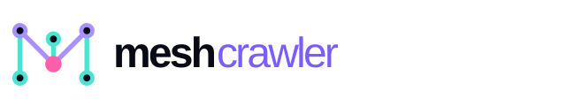
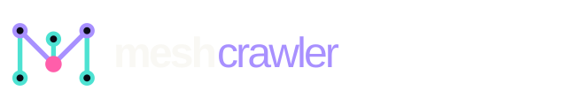

Brand guidelines / 01
The signal,
made visible.
A practical guide to using the MeshCrawler mark, wordmark, colors, and type. Keep the system clear, connected, and a little bit electric.
Download the assets
MARK / 01 SYSTEM / SIGNAL / CLARITYThe mark / 02
A map for
connected thinking.
The graph-shaped M is a compact expression of MeshCrawler: systems become useful when the relationships between things become visible.
Three vertical rails give the mark structure. The descending path creates the M and the sense of movement through a system. Six nodes mark the points where signal becomes connection.
StructureVertical rails
ConnectionDescending path
SignalCentral node
Assets / 03
Use the
right signal.
The SVG files are the source of truth and scale to any size. PNG exports are useful for presentations, documents, and quick social use.
{kind=link}
{kind=link}
{kind=link}
{kind=link}
{kind=link}
{kind=link}
Color / 04
Bright signal.
Deep field.
Color carries the contrast between clarity and complexity. Keep the dark field dominant and use bright accents with intention.
Ink
#080A15Violet
#7C5CFFCyan
#4DE2D2Pink
#FF5EAAPaper
#F5F4F0DISPLAY / MANROPE 700—800Make the
complex legible.
complex legible.
Typography / 05
Human signal,
machine clarity.
Manrope is the primary typeface: warm, geometric, and highly readable. DM Mono is the utility voice for labels, metadata, and system details.
Usage / 06
Keep the
signal clear.
A few simple rules keep the identity recognizable wherever it travels.
Give it room
Keep clear space around the mark equal to at least the height of one node.
Protect the colors
Use the dark variant on dark fields and the primary variant on light fields. Don’t recolor individual nodes.
Don’t distort
Never stretch, rotate, redraw, or add effects that compete with the network structure.
Prefer the SVG
Use the SVG master for print, decks, websites, and anything that needs to stay sharp at scale.